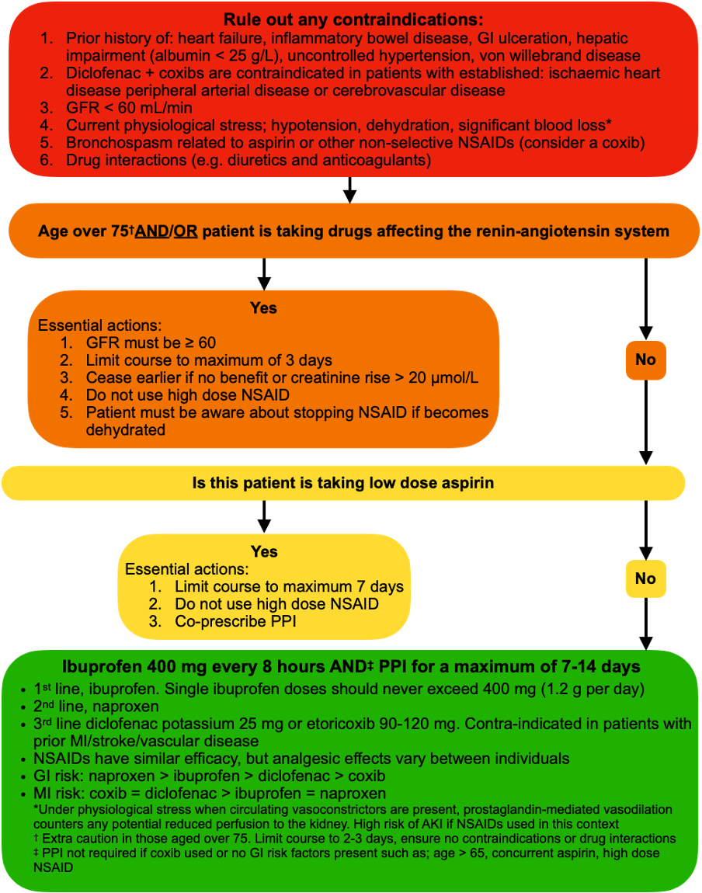
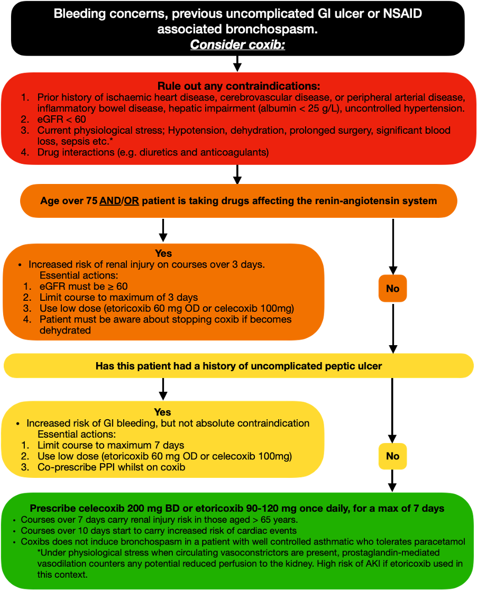

Anaesthesia and pain medicine publications
- Haslam N, Halvey E, Scott C. Perioperative care of patients undergoing total hip arthroplasty. BJA Education. 2024; 24(6). doi:10.1016/j.bjae.2024.03.002
- Halvey EJ, Haslam N, Mariano ER. Non-steroidal anti-inflammatory drugs in the perioperative period. BJA Education. 2023; 23(11): 440-447. doi:10.1016/j.bjae.2023.08.001
- McPherson J, Halvey EJ, Aujayeb A. Erector spinae plane blocks for day-case medical thoracoscopy: a pilot clinical study. Pleura and Peritoneum. 2022; 7(4): 187-190.
- Halvey EJ, Aujayeb A, McPherson J. Regional erector spinae block for medical thoracoscopy. Thorax. 2022; 77(Suppl 1): A262. (British Thoracic Society conference abstract)
- Halvey EJ, Wahed A. Pain following major lower limb amputation within a district general hospital. Anaesthesia. 2020; 75 Suppl 3: 10-106.
- Dawson S, Halvey EJ. Pain associated with laparoscopic and robotic nephrectomy. Anaesthesia. 2020; 75 Suppl 3: 10-106.
Early research (neuroscience)
- Halvey EJ, Vernon J, Roy B, Garthwaite J. Mechanisms of activity-dependent plasticity in cellular nitric oxide-cGMP signalling. J Biol Chem. 2009; 284(38): 25630-41.
- Batchelor AM, Bartus K, Reynell C, Constantinou S, Halvey EJ, Held KF, Dostmann WR, Vernon J, Garthwaite J. Exquisite sensitivity to subsecond, picomolar nitric oxide transients conferred on cells by guanylyl cyclase-coupled receptors. Proc Natl Acad Sci USA. 2010; 107(51): 22060-5.
- Roy B, Halvey EJ, Garthwaite J. An enzyme-linked receptor mechanism for nitric oxide-activated guanylyl cyclase. J Biol Chem. 2008; 283(27): 18841-51.
Perioperative NSAID safety and prescribing
Dr Halvey has developed prescribing guidance for the safe perioperative use of anti-inflammatory medicines (NSAIDs and coxibs).

